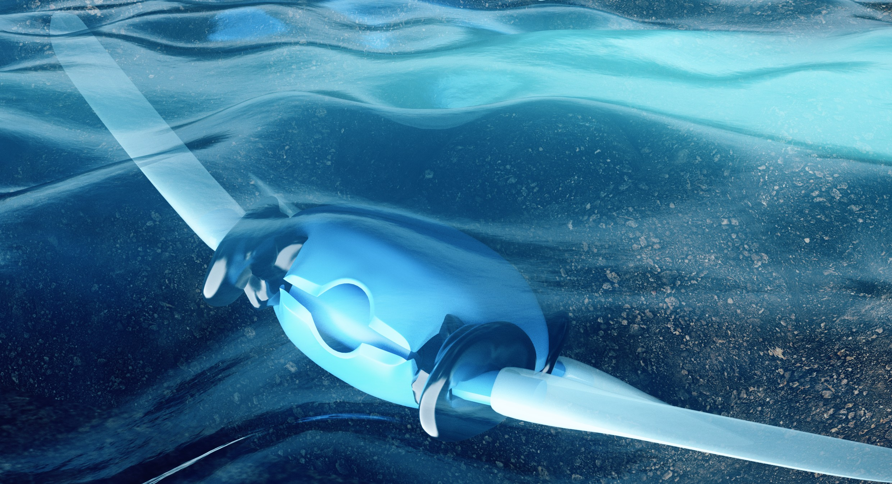

AMPHIBIOUS ROBOTICS
Adaptive Morphogenetic Robotic Turtle
Development of a shape-changing amphibious robot that uses morphing limbs to move across terrestrial and aquatic environments while reducing the energetic cost of adaptation.
Mechanical DesignRoboticsPrototypingTesting
View project →